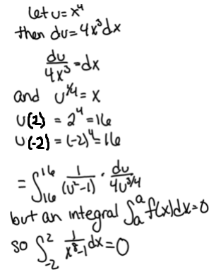

Find \(\displaystyle \int _{-2}^{2} \dfrac {1}{x^8-1} \, \d x\).

The error is that the definite integral is not even defined. Specifically, the function \(\dfrac {1}{x^8-1}\) is
not defined at \(x=1\), and the limit \(\displaystyle \lim _{x\to 1^+} \frac {1}{x^8-1} = \infty \). Other errors were also made. For example,
when \(-2 \leq x \leq 0\) we know that \(u^{\frac {1}{4}} = -x\), not \(x\), which makes the rest of this “solution” invalid.